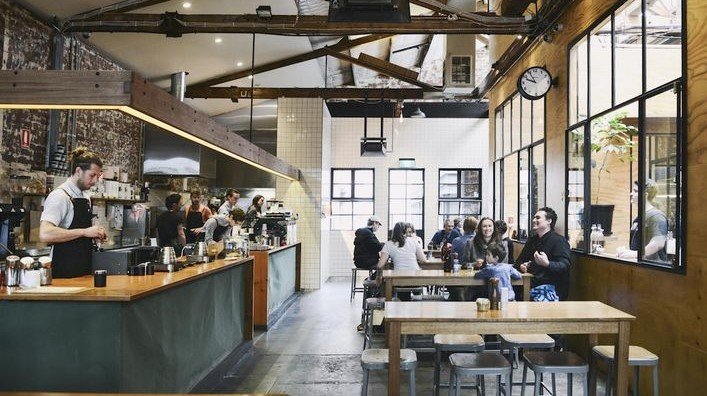
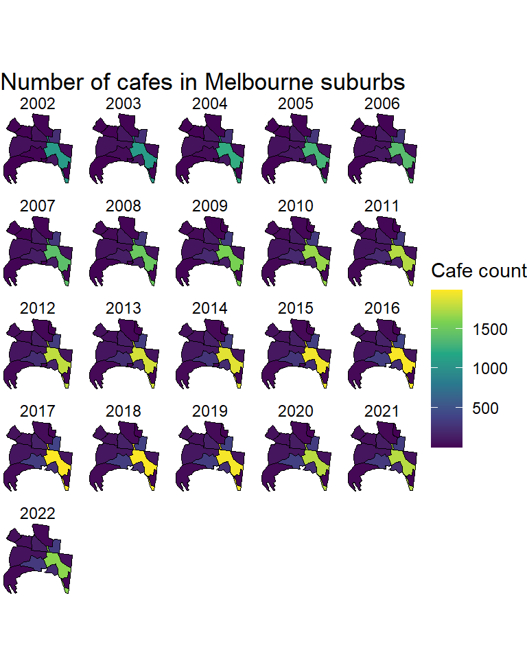
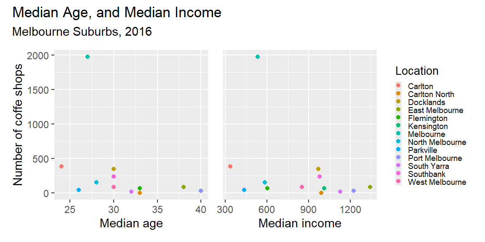
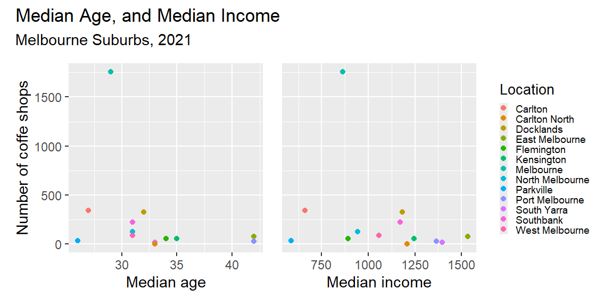

Melbourne’s coffee business growth: Age and Income Are Not Key Factors
news
Author
Phuong Anh Le
Published
October 6, 2024

Melbourne’s vibrant coffee culture is well-known, with the city often referred to as the coffee capital of Australia. From quaint laneway cafes to bustling coffee roasteries, Melbourne’s coffee scene has seen explosive growth over the past few decades. But what influences this boom in coffee shops? The blog will explore the change in the concentration of coffee shops among Melbourne’s suburbs and whether the age and income levels of residents might be the deciding impacts of those trends.
Data Source and Methodology
Data Collection
Aiming to explore the growth of coffee business in Melbourne’s suburbs, different data sets will be collected and observed:
The data set Cafe, restaurant, bistro seats contains information about cafes and restaurants establishment with seating capacity, detailed address and location in Melbourne.
The shapefile Melbourne Suburbs provides information about the geometric elements and postcodes of Melbourne’s suburbs. This information generates a visualized map of City of Melbourne in the following analysis.
Finally, the information about the age and income levels of residents in Melbourne’s suburbs will be collected from the Australian Bureau of Statistics (ABS) Census data. Specifically, the package G02 of Census DataPacks 2021 and Census DataPacks 2016 will be collected. Here, the census data of two year 2016 and 2021 will be used for further analysis.
Data Processing
The data sets are processed to extract the necessary information for the analysis. The vic_coffee_data is filtered to include the number of cafes and restaurants in Melbourne’s suburbs. The post code information is extracted from the business address to match the suburb map data. The count of coffee shops in each suburb refers to the sum of establishment in each year. Sequentially, the final data set is joined with the suburb map data by the post codes to create a visualized map of coffee shops in Melbourne’s suburbs.
Show the code
# Create post code column for coffee shop datacafe_data <- cafe_data |>mutate(post_code =str_extract(business_address, "\\d{4}$"))# Coffee shops count by post code and census yearcafe_data_1 <- cafe_data |>group_by(post_code, census_year) |>summarise(cafe_count =n())cafe_data_2 <- cafe_data_1 <-tibble(post_code =as.double(cafe_data_1$post_code), census_year =as.double(cafe_data_1$census_year),cafe_count = cafe_data_1$cafe_count) vic_coffee_map <- suburb_map |>left_join(cafe_data_2, by =c("postcode"="post_code"))
The SSC and SAL code of Melbourne’s suburbs in 2016 and 2021 census data is used to match the location names in suburb map data. The census_suburb_code data frame is created to store the suburb names and their corresponding codes in the 2016 and 2021 census data. Next, the suburbs code is used to filter the corresponding median age and income information for Melbourne in 2016 and 2021, storing that in the census_surb data frame.
There were no records of cafe shops for South Whaft suburbs after 2015, thus the data was removed from the analysis. The vic_coffee_16 and vic_coffee_21 data frame is created to store the number of cafes and census data in Melbourne’s suburbs. The data is created by joining the vid_coffee_map and the census_surb data frame for further comparison and analysis.
Show the code
vic_coffee_21 <- vic_coffee_map |>filter(census_year ==2021) |>left_join(census_surb, by ="Location") |>select(-c("Median_age_16", "Median_income_16"))|>arrange(desc(cafe_count))vic_coffee_16 <- vic_coffee_map |>filter(census_year ==2016) |>left_join(census_surb, by ="Location") |>select(-c("Median_age_21", "Median_income_21")) |>arrange(desc(cafe_count))
Data dictionary
The dictionary below indicates the variable names and their detailed information.
Location: Name of Melbourne suburbs (14 distinct observations)
postcode: Aligned Melbourne official suburbs (14 distinct observations)
census_year: Year of census data collecting (From 2002 to 2022)
cafe_count: Number of food and beverage shops in each year
geometry: the polygon data of each suburb’s location, containing the two dimensions: latitude and longitude
Median_age_16 and Median_income_16: Average age and personal income of citizens in each suburb of the census year 2016
Median_age_21 and Median_income_21: Average age and personal income of citizens in each suburb of the census year 2021
The boom of coffee business in Melbourne

Figure 1: Number of cafes in Melbourne suburbs
Over recent years, Melbourne has experienced a significant increase in the number of coffee shops opening across the city. Figure 1 illustrates that this growth is not restricted to any particular suburb; yet there had been an exceptionally large number of coffee shops located in the central business district.
Table 1: Number of cafes in Melbourne suburbs (2016 and 2021)
Suburb
2016
2021
Melbourne
1977
1757
Carlton
388
342
Docklands
347
326
Southbank
241
223
North Melbourne
154
123
West Melbourne
88
84
East Melbourne
84
76
Kensington
67
55
Flemington
67
55
Parkville
42
31
Port Melbourne
32
28
South Yarra
18
15
Carlton North
3
1
Table 1 shows the number of coffee shops in Melbourne’s suburbs in 2016 and 2021. The data indicates that there had been a slight decrease in the number of cafes in most suburbs between two years. This change might be occurred due to the impact of the COVID-19 pandemic on the social distance policies and various business operations causing a significant interruption in the overall food and beverage industry (Miller 2020). Nevertheless, the concentration of coffee shops in Melbourne remains high in particular central suburbs over the periods. What might influence this special pattern, the demographic factors such as age and income levels of residents or other collective elements?
Age and Income: Not Major Influences?
It would be easy to assume that areas with higher disposable incomes or a younger demographic might be potentially explain the fueling growth of coffee shops in specific locations. However, research into Melbourne’s suburbs has shown that the portfolio of coffee shops is not significantly tied to the average age or income levels of the residents.

Figure 2: Melbourne suburbs, 2016

Figure 3: Melbourne suburbs, 2021
Figure 2 and Figure 3 illustrate the relationship between the number of coffee shops and the median age and income levels of residents in Melbourne’s suburbs in 2016 and 2021. The data shows that there is no clear correlation between the number of coffee shops and the average age or income levels of residents in Melbourne’s suburbs. Specifically, while the left plots in two figure could highlighted the median age of location with higher number of coffee shops, the right ones shows that suburbs with varying median incomes have a scattered distribution of coffee shops.
Furthermore, the central business district and nearby suburbs have a high concentration of coffee shops in both years, with the average age of residents ranging from their mid-twenties to early thirties. This age group was also identified as the most frequent coffee consumers according to the Worldmetrics report (Eser 2024). On the other hand, suburbs with an older demographic and higher median incomes had a moderate to lower number of coffee shops. These areas are likely more focused on residential housing. In conclusion, the distribution of coffee shops seems to be influenced more by the age demographic and lifestyle preferences of residents than by income levels.
What other factors drive the boom of coffee business?
The growth of coffee shops in Melbourne is driven by a combination of factors, including the city’s vibrant coffee culture, the availability of commercial space, and the lifestyle preferences of residents. The city’s coffee culture has been shaped by its diverse population, with a strong emphasis on quality and innovation. The concentration in customer services, product quality and innovative experience has driven the success of small business in this competitive market (Gargano 2015). Additionally, the distribution of commercial and industrial spaces in Melbourne’s central business district has also played a key role in the growing demand of F&B shops, with many new cafes and roasteries opening in recent years. Finally, the lifestyle preferences of residents, particularly the younger demographic, have also impacted the demand for specialty coffee and unique cafe experiences.
What other factors drive the boom of coffee business?
The growth of coffee shops in Melbourne is driven by a combination of factors, including the city’s vibrant coffee culture, the availability of commercial space, and the lifestyle preferences of residents. The city’s coffee culture has been shaped by its diverse population, with a strong emphasis on quality and innovation. The concentration in customer services, product quality and innovative experience has driven the success of small business in this competitive market (Gargano 2015). Additionally, the distribution of commercial and industrial spaces in Melbourne’s central business district has also played a key role in the growing demand of F&B shops, with many new cafes and roasteries opening in recent years. Finally, the lifestyle preferences of residents, particularly the younger demographic, have also impacted the demand for specialty coffee and unique cafe experiences.
A growing culture surpassing various factors
The increasing number of coffee shops in Melbourne over the past few years reveals the city’s vivid coffee culture and the growing demand for this speciality experience across all suburbs. The analysis of the concentration of coffee shops in Melbourne’s suburbs has shown that the growth of coffee shops is not significantly influenced by the age or income levels of residents. Moreover, the scattered distribution of coffee establishments suggests various characteristics of different suburbs, indicating other multiple factors impacting the development of this industry. The coffee business in Melbourne is a testament to the city’s vibrant and diverse culture, and it will continue to thrive in the years to come. Thus, further exploration of the coffee business in Melbourne and other correlating perspectives is needed to understand the entire picture and forecast of this booming industry.
Australian Bureau of Statistics (n.d.) Census Datapacks [Data set]. https://www.abs.gov.au/census/find-census-data/datapacks?release=2021&product=GCP&geography=SAL&header=S
Australian Bureau of Statistics (n.d.) Census Datapacks [Data set]. https://www.abs.gov.au/census/find-census-data/datapacks?release=2016&product=GCP&geography=SSC&header=S
City of Melbourne (n.d.) Café, restaurant, bistro seats [Data set]. https://data.melbourne.vic.gov.au/explore/dataset/cafes-and-restaurants-with-seating-capacity/export/?location=13,-37.8044,144.9387&basemap=mbs-7a7333
Eser A (2024, 24 July) Australian Coffee Consumption: Key Stats and Trends Revealed in Study, (WORLDMETRICS.ORG REPORT 2024), World Metrics. https://worldmetrics.org/australian-coffee-consumption-statistics-2/
Gargano S (2015, April) IBISWorld Industry Report H4511b Cafes and Coffee Shops in Australia (Australian Industry (ANZSIC) Report), Ibis World. https://konacoffeefarmers.org/wp-content/uploads/2015/05/Cafes-and-Coffee-Shops-in-Australia-Industry-Report-Apr-2015.pdf
Miller E (June 15, 2020), https://www.beanscenemag.com.au/coping-with-covid-19/